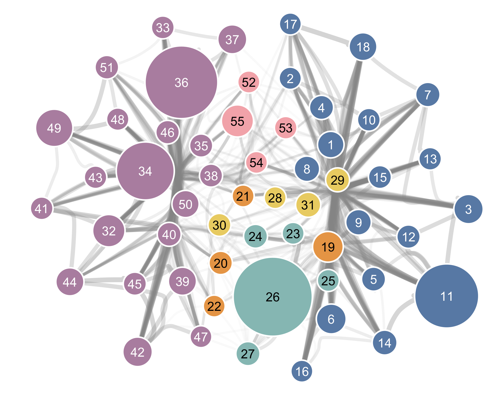
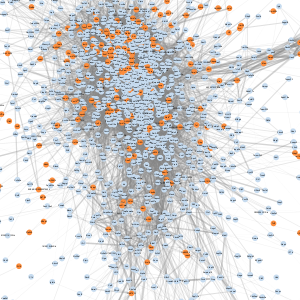
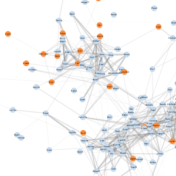
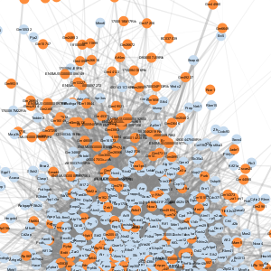
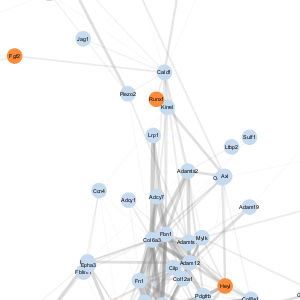
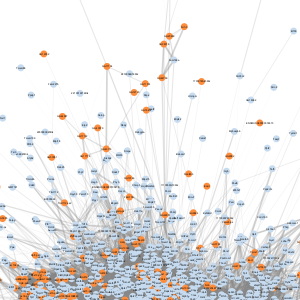
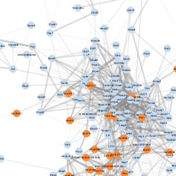

NEEDS REVISED TEXT HERE --- A gene co-expression network for mouse pancreatic beta-cells
Each node in the meta-network represents a module of highly co-expressed genes. The meta-network is defined by correlations between module eigengenes and partitions modules into three distinct strongly connected module groups. See figure 1 in the manuscript for additional detail.
Please cite:
Anna B Osipovich, et al. PAPER TITLE. ETC. (PDF)
We have prepared Cytoscape *session* files that you can download and simply open with Cytoscape to view and interact with the network meta-modules.
For each meta-module, you will find below:
| Meta-module | Image | # nodes1 | # of edges2 | All Genes | Transcription Factors Activity Genes |
|---|---|---|---|---|---|
| A |  | 2,110 | 1,831,174 | Download | Download |
| B |  | 319 | 67,374 | Download | Download |
| C |  | 1,159 | 1,173,480 | Download | Download |
| D |  | 257 | 34,882 | Download | Download |
| E |  | 3,237 | 4,041,196 | Download | Download |
| F |  | 334 | 63,296 | Download | Download |
You can download it here.
In order to load a network from a local file you can select File → Import → Network → File... Choose the correct file in the file chooser dialog and press Open. After you choose a network file, another dialog will pop up. Here, you can choose either to create a new network collection for the new network, or load the new network into an existing network collection. When you choose the latter, make sure to choose the right mapping column to map the new network to the existing network collection.
Zstandard is a real-time compression algorithm, providing high compression ratios. It's like ZIP, but much better and faster. If you are using linux or mac, then use the "zstd" command. In windows, check out https://mcmilk.de/projects/7-Zip-ZStd/ or other suitable alternatives.
If you have questions, please contact the corresponding author of the manuscript or post an issue in the GitHub issue tracker for this repository.
{kind=link}
{kind=link}
{kind=link}
{kind=link}
{kind=link}
{kind=link}
{kind=link}